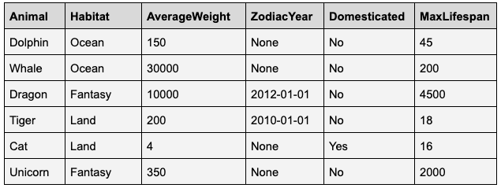
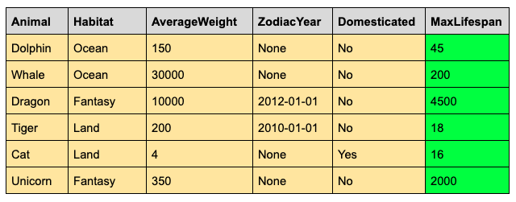
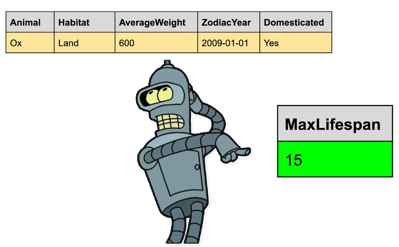
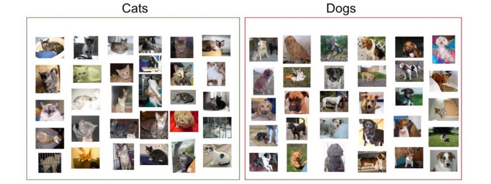

After reading this post,
- You'll have a high-level understanding of what Machine Learning is and how it works
- You'll be able to consider what's possible with Machine Learning within your business or sector
If that's worth six minutes of your time - then jump on down the page…
Setting the scene
In theory, software programs will do the same thing every time they run. This is because the actions they take are explicitly programmed. Opposingly, machine learning programs will attempt to improve their performance in relation to a goal as they gain experience. This is because only the goal is explicitly programmed, the actions they take are implicit. Most people think machine learning relies on fancy algorithms. That's maybe 40% true - while you need the algorithms, they aren't the fundamental driver of performance or what's possible. What matters is the data which the algorithms use to learn.
How to think about data
Loosely speaking, data is just stored information. In the real world, we can classify collections of data as either structured or unstructured. Machine learning can be applied with both structured and unstructured data - but it's important to understand the difference.
Structured Data
Structured data lives in a table consisting of rows and columns. For example:
You'll also hear 'tabular data' as a reference to structured data
Unstructured Data
Unstructured data is everything that doesn't live in a table of rows and columns. But don't fret, just because it has less structure, doesn't mean we can't use it for machine learning. Common examples of unstructured data include:
- Text
- Images
- Videos
- Voice recordings
- Documents (eg 1000s of PDFs)
Types of Machine Learning
Machine learning programs fall into one of three families:
- Supervised learning, where our algorithm is given examples of the target answer we want to predict
- Unsupervised learning, where our algorithm doesn't have examples of the answer to learn from, but rather generates new findings from the data
- Reinforcement learning, where a machine is exposed to a new environment and asked to learn from trial and error
Supervised learning is far and away the most utilized framework in the world today. If you're starting to look at potential applications of machine learning - then supervised learning should be your first port of call. Don't sleep on unsupervised learning though, it has specific use cases which we'll gloss over shortly. Meanwhile, reinforcement learning is a still-emerging framework currently most well known for beating humans in complex games.
Supervised Learning with Structured Data
It's all in the name, our model needs to learn how to find the target variable before it will know how to find the variable. The machine needs a dataset to learn from, and that dataset must contain the target variable. Let's pretend we're training an algorithm to predict an animal's maximum lifespan. We could use our dataset from before:
Our algorithm would go to work examining the relationships between the yellow dependent variables and the green target variables. Once trained, we could test our robot on new data that it hadn't seen before.
If our training data was good, then our algorithm will predict the maximum lifespan of an animal (our target variable) with a high degree of accuracy.
Supervised Learning with Unstructured Data
It's the same logic for images and other unstructured data. We can train a machine to look for something, but first, we need to tell it what to look for. Give an algorithm a few thousand labeled cat and dog photos, and it'll pretty quickly work out how to classify your local household animals.
Welcome to the most cliche machine learning example possible
This applies for image sentiment, facial recognition, or any other image classification problem. Again, data quality is by far the most important contributor to success. Training the model is relatively easy given a high quality labeled dataset.
Unsupervised Learning
Unsupervised machine learning algorithms examine patterns in the data to identify new trends. A common example is clustering, where an algorithm will identify groups within the dataset that we weren't previously aware of.
Unsupervised learning can be extremely useful in specific use cases. Well known examples include:
- Detecting dangerous anomalies in an aircraft engine
- Clustering customers into different cohorts based on unique behaviors
- Detecting odd, and potentially fraudulent bank transactions
Reinforcement Learning
Reinforcement learning involves an algorithm in a dynamic environment, such as a video game or as the controller of an energy system. The algorithm is able to explore and try different actions - it is rewarded for positive decisions, and penalized for negative ones. In a general sense, reinforcement learning artificially replicates a human's ability to learn by trial and error.
Humans learn from their mistakes right?
Although real-world applications are emerging, reinforcement learning is largely centered in the research world. The AlphaGo documentary is a fantastic watch for those interested in the accelerating development of reinforcement learning and artificial intelligence.
Thinking about what's possible
Now that we've completed Machine Learning 101, we can start to think about potential machine learning applications.
X Marks the Spot
The first question to ask is, what's the target? What do we want to know? Some examples of target variables we could select:
- Temperature -> predicting daily maximum temperatures
- Species -> predicting what species an animal in a photo belongs to
- Price -> predicting what price will maximize profit from a product or business
Once we have a target, we can start to structure a relevant dataset. For example, if predicting temperature, we would gather historical weather data. Or if identifying species, we'd look for as many animal photos as possible.
Measuring uncertainty
It's easy to see there are limitless applications of machine learning. It's harder to tell which potential projects will be successful. After determining a target, new, harder questions emerge - to mention a few:
- Do we have enough data that accurately represents the target?
- Are there biases in our data which we don't want our model to learn?
- Will our algorithm perform better than a human? Does it need to?
As you can imagine, these questions can rarely be answered at the outset of a project. But that doesn't mean they're not worth asking. It's important to understand the assumptions you're making before you commit to experimentation. However, while planning and risk assessment are important, you'll never know how successful your project is going to be. Or how long it will take. Or whether your data carries unwanted bias. At some point, you have to acknowledge the uncertainty and jump in. That's the fun part.